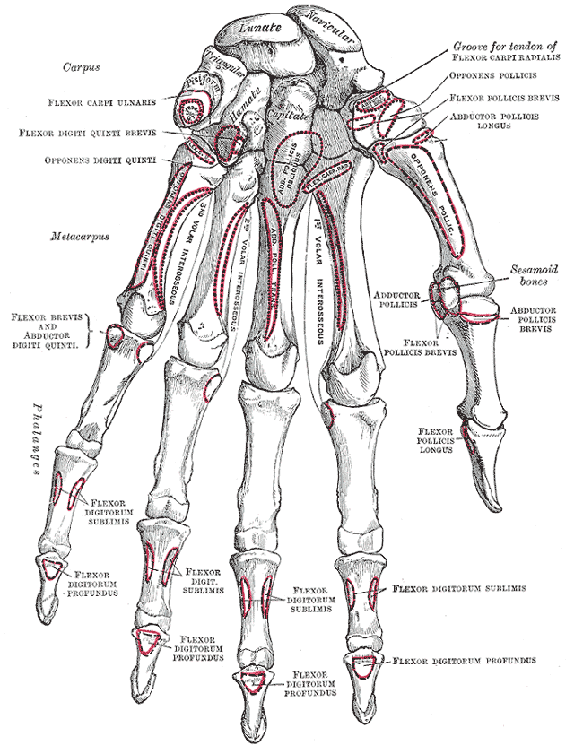

Condition
Thumb Arthritis (CMC / Basal Joint)
Pain at the base of the thumb from worn-out cartilage. One of the most common forms of hand arthritis.

What is thumb arthritis?
The joint where your thumb meets your wrist is called the carpometacarpal (CMC) or basal joint. Its shape lets the thumb move in many directions, which also makes it prone to wear over time. When the cartilage in the joint wears out, the bones rub together and the joint becomes painful and stiff. This is thumb arthritis. It is very common, especially in women over 50.
Common symptoms
- Pain at the base of the thumb with pinching, gripping, or twisting (opening jars, turning keys)
- Aching after activity that settles with rest
- Weakness when pinching
- A bump or prominence at the base of the thumb
- In later stages, the thumb sits closer to the palm and cannot open wide
Why does it happen?
Thumb CMC arthritis usually develops from years of normal use. It is much more common in women than men and often runs in families. A prior sprain or fracture near the thumb can accelerate it. It is not caused by cracking your knuckles.
Treatment options
Non-surgical treatment
- Thumb splint. A small splint that supports the base of the thumb can calm a flare, especially during painful tasks or at night.
- Activity modification. Built-up pen grips, jar openers, and avoiding small pinches can all help.
- Anti-inflammatories. Short courses of over-the-counter anti-inflammatories (ibuprofen, naproxen) can help during flares.
- Steroid injection. A cortisone injection into the joint can provide months of relief and is a good option before considering surgery.
Surgical treatment
- Trapeziectomy with suspensionplasty. The small arthritic bone at the base of the thumb (trapezium) is removed and a sling is made from a nearby tendon to keep the thumb in position. This is the most common and durable surgery for thumb arthritis. Recovery is several weeks in a cast or splint followed by hand therapy; most patients are back to light use within 6 to 8 weeks and fully recovered by 3 to 6 months.
- Other options. Joint fusion and implant arthroplasty are used in specific situations. Dr. Barrera will discuss which approach fits you best.
What to expect at your visit
Dr. Barrera will examine your thumb, test the joint for pain and grinding (the "grind test"), and review X-rays. The X-rays show how worn the joint is and help guide treatment. Most patients start with splinting and an injection; surgery is reserved for people whose symptoms limit daily life despite conservative care.
Call us if the thumb becomes suddenly red, hot, and swollen (this can be infection or a gout flare, not ordinary arthritis), if you cannot move the thumb at all, or if you had a recent fall that caused a new sharp pain.
Questions?
Call your office location for non-urgent questions:
- NYU Langone Laurelton · 646-501-4950
- NYU Orthopedic, Woodside · 929-429-3222
- Axel Office (Richmond Hill) · 718-206-6923
- Jamaica Hospital Ambulatory Care Center (ACC) · 718-301-0720
See our office contact information for addresses and fax numbers.